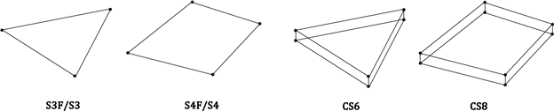
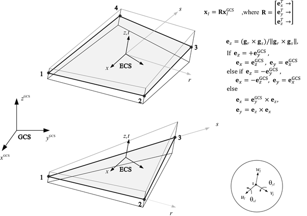
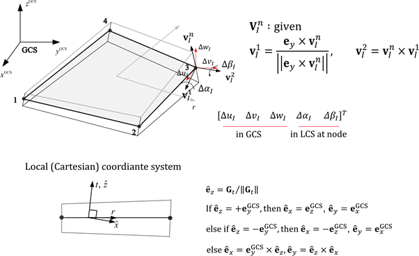
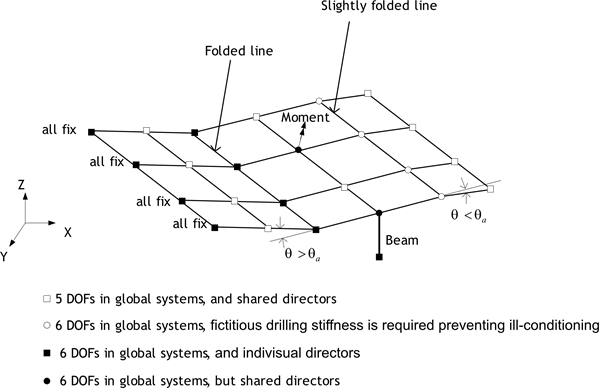
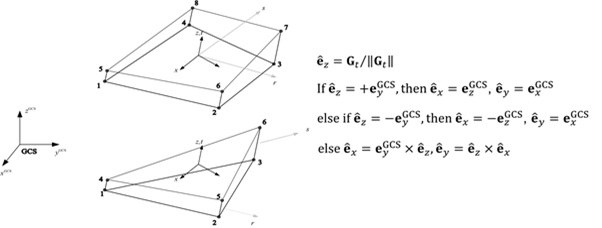
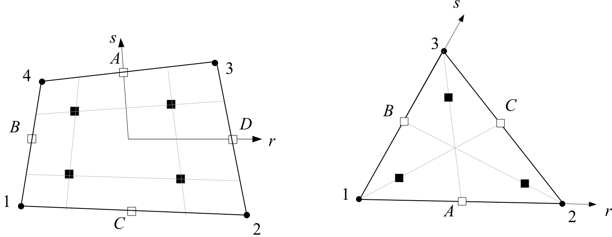
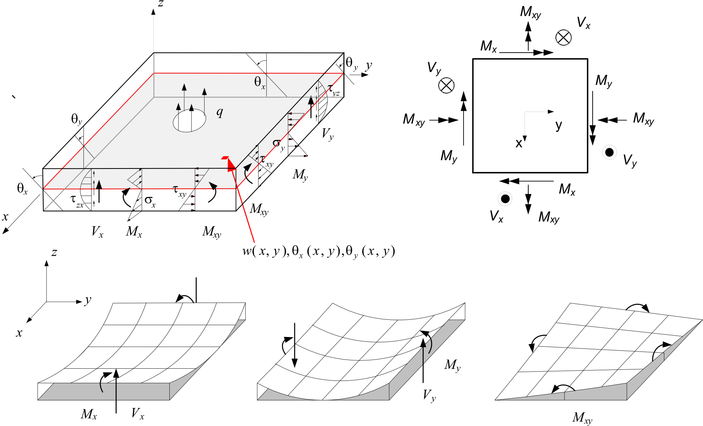

Shell 요소
쉘 구조는 자신의 전장(span)에 비해 두께가 얇은 구조로 정의할 수 있다. 응력 조건 측면에서 볼 때 두께가 얇은 방향으로 응력이 0이며, 쉘 구조의 모델링에는 쉘 요소가 사용되어야 한다. 쉘 유한요소의 종류로는 일반 쉘 요소(conventional shell element)와 연속체 쉘 요소(continumn shell) 등으로 크게 구분된다(Figure 7.1참조). 보통 일반 쉘 요소는 보통 중간면(mid-surface)으로 설정되는 기준면(reference plane)을 기준으로 이산화가 이루지는 쉘 요소를 의미한다. 기준면에 존재하는 절점에서는 3개의 평행이동 자유도와 2개 또는 3개의 회전자유도가 존재할 수 있다. 연속체 쉘의 경우 일반 연속체 요소와 같이 절점 단위에서 평행이동 자유도가 존재하며, 연속체 요소와 동일한 모델링이 가능하므로 경우에 따라서 편리하게 사용할 수 있다.

Fig. 4.5-1. Shell elements
■ 요소 타입
- S3F : 3 node triagular flat shell
- S4F : 4 node quadlrangle flat shell
- S3 : 3 node triagular general shell
- S4 : 4 node quadlrangle general shell
- CS6 : 6 node triagular continuum shell
- CS8 : 8 node quadlrangle continuum shell
■ 요소 단면
- Shell : 균일 단면을 정의
■ 요소 개발 물성치(Distribution)
- NodalThickness : 변단면 요소에서 각 절점에 두께를 지정
일반 쉘 요소는 flat shell 요소(S3F, S4F)와 general shell 요소(S3, S4)로 구분된다. Flat shell은 편평하다고 가정한다. 따라서 요소의 두께 방향 벡터가 일정하기 때문에 요소의 ECS가 정의된다. 요소 정식화 과정에서 단면력-단면변형 관계를 구성방정식으로 사용한다. General shell 요소는 절점에 두께 방향 벡터인 디렉터 벡터를 지정이 가능한 곡면까지 모델링이 가능하며, 응력-변형률 관계를 구성방정식으로 사용한다. 정식화 과정에서 연속체 요소를 기준면으로 축약하는 방식을 적용하기 때문에 degenerated shell로도 불린다. General shell 요소는 곡면이므로 재료점에서 서로 다른 국부좌표계(LCS)가 정의된다. 편평한 조건에 적용할 경우 flat shell과 동일한 결과를 유도한다.
일반 쉘 요소는 모두 전단잠금(shear locking)을 제거하기 위해 MITC 기법에 의한 AS(Assumed Strain)법을 적용한다. 두께 뱡향의 적분은 Lobatto, Legendre, Newon-Cotes 등 3가지 방식을 지원한다. 디폴트로 Lobatto는 선형재료 3점, 비선형재료 4점을, Legendre는 선형재료 2점, 비선형재료 3점을, Newton-Cotes는 선형재료 3점, 비선형재료 5점을 사용한다.

Fig. 4.5-2. S4F, S3F의 요소좌표계

Fig. 4.5-3. S4, S3의 국부좌표계
Conventional shell 요소는 절점당 5자유도를 인접요소가 3개의 회전자유도를 갖거나 회전자유도에 대한 구속조건이나 하중조건이 부과된 경우, 또는 인접한 쉘 요소과 절점의 법선 벡터가 다른 경우 자동으로 6자유도로 변경된다.

Fig. 4.5-4. S3, S4, S3F, S4F의 5/6 자유도 처리
솔리드 쉘요소는 일반 솔리드 요소와 동일하게 모델링이 가능한 쉘 요소이다. 절점당 3개의 자유도를 가진다. AS법 뿐만아니라 EAS(Enhanced Assumed Strain)을 적용하여 다양한 잠김을 제거하였다. 한편 재료모델은 3차원 재료 모델을 적용하였다. 따라서 임의 방향 또는 필요한 방향으로 직교좌표계를 국부좌표계로 선택하면 된다. 하지만 일반 쉘요소와 일관성을 유지하기 위해 두께방향을 국부좌표계의 z 방향이 되도록 설정하였다. 두께 뱡향의 적분은 general shell 요소와 같다. Lobatto, Legendre, Newon-Cotes 등 3가지 방식을 지원하며 디폴트로 Lobatto는 선형재료 3점, 비선형재료 4점을, Legendre는 선형재료 2점, 비선형재료 3점을, Newton-Cotes는 선형재료 3점, 비선형재료 5점을 사용한다.

Fig. 4.5-5. SC8, SC6의 국부좌표계
쉘 요소는 평면내에서 그림처럼 4점 또는 3점의 적분점에서 그 결과를 출력할 수 있다. S3F, S4F는 중립면에서의 단면력, 단면변형을 제공하지만, S3, S4, CS6, CS8은 두께방향으로 최하, 최상의 적분점에서의 응력, 변형률 등을 출력한다. 단면력은 적분을 통해 중립면을 기준으로 계산되어 제공된다.

Fig. 4.5-6. 4절점, 3절점 쉘요소의 적분점

Fig. 4.5-7. Shell 요소의 단면력 정의점
Example
*Material,Type=IsoElasticity,Name=mat
30E9, 0.18, 0, 2000. # E, nu, alpha, density
*Section, Type=Shell,Name=sec
mat, 0.01 # h
*Element, Type=S4F
1, 1, 2, 3, 4, S=sec, H=-1, 0.02, -1, 0.02 # 2,3번째 절점의 H=0.02, 1,4번째는 H=0.01(default) 적용
*Element, TYPE=S3F
3절점 평판 요소를 정의
*Element, Type=S3F, ELSet=elset
id,n1,n2,n3 {, S=section, H=h1,h2,h3}
...
First dataline and subsequent datalines
- H=h1,h2,h3: 절점에서의 두께. 음수이면 단면에서 정의하는 두께 적용. 디폴트는 -1
Specifications
- No. of nodes: 3
- Fields: SSF=[Nx Ny Nxy Mx My Mxy Vx Vy], SSE=[Ex Ey Gxy Kx Ky Kxy Gxz Gyz], SST=[T0 Tz] at each Gauss points for midsurface. Material model at each Gauss points for top and bottom surface in shell section, or for repective vertical center in composite shell section.
- Compatible section: ShellSection, CompositeShellSection
- Active DOFs: X, Y, Z, SRX, SRY
*Element, TYPE=S4F
4절점 평판 요소를 정의
*Element, Type=S4F, ELSet=elset
id,n1,n2,n3,n4 {, S=section, H=h1,h2,h3,h4}
...
First dataline and subsequent datalines
- H=h1,h2,h3,h4: 절점에서의 두께. 음수이면 단면에서 정의하는 두께 적용. 디폴트는 -1
Specifications
- No. of nodes: 4
- Fields: SSF=[Nx Ny Nxy Mx My Mxy Vx Vy], SSE=[Ex Ey Gxy Kx Ky Kxy Gxz Gyz], SST=[T0 Tz] at each Gauss points for midsurface. Material model at each Gauss points for top and bottom surface in shell section, or for repective vertical center in composite shell section.
- Compatible section: ShellSection, CompositeShellSection
- Active DOFs: X, Y, Z, SRX, SRY
*Element, TYPE=S3
3절점 쉘 요소를 정의
*Element, Type=S3, ELSet=elset id,n1,n2,n3 {, S=section, H=h1,h2,h3} ...
First dataline and subsequent datalines
- H=h1,h2,h3: 절점에서의 두께. 음수이면 단면에서 정의하는 두께 적용. 디폴트는 -1
Specifications
- No. of nodes: 3
- Fields: SSF=[Nx Ny Nxy Mx My Mxy Vx Vy], SSE=[Ex Ey Gxy Kx Ky Kxy Gxz Gyz], SST=[T0 Tz] at each Gauss points for midsurface. Material model at each Gauss points for top and bottom surface in shell section.
- Compatible section: ShellSection
- Active DOFs: X, Y, Z, SRX, SRY
*Element, TYPE=S4
4절점 쉘 요소를 정의
*Element, Type=S4, ELSet=elset
id,n1,n2,n3,n4 {, S=section, H=h1,h2,h3,h4}
...
First dataline and subsequent datalines
- H=h1,h2,h3,h4: 절점에서의 두께. 음수이면 단면에서 정의하는 두께 적용. 디폴트는 -1
Specifications
- No. of nodes: 4
- Fields: SSF=[Nx Ny Nxy Mx My Mxy Vx Vy], SSE=[Ex Ey Gxy Kx Ky Kxy Gxz Gyz], SST=[T0 Tz] at each Gauss points for midsurface. Material model at each Gauss points for top and bottom surface in shell section.
- Compatible section: ShellSection
- Active DOFs: X, Y, Z, SRX, SRY
*Element, TYPE=CS6
6절점 솔리드 쉘 요소를 정의
*Element, Type=CS6, ELSet=elset
id,n1,n2,n3,n4,n5,n6 {, S=section }
...
Specifications
- No. of nodes: 6
- Fields: SSF=[Nx Ny Nxy Mx My Mxy Vx Vy], SSE=[Ex Ey Gxy Kx Ky Kxy Gxz Gyz], SST=[T0 Tz] at each Gauss points for midsurface. Material model at each Gauss points for top and bottom surface in shell section.
- Compatible section: ShellSection
- Active DOFs: X, Y, Z
*Element, TYPE=CS8
8절점 솔리드 쉘 요소를 정의
*Element, Type=CS8, ELSet=elset
id,n1,n2,n3,n4,n5,n6,n7,n8 {, S=section }
...
Specifications
- No. of nodes: 8
- Fields: SSF=[Nx Ny Nxy Mx My Mxy Vx Vy], SSE=[Ex Ey Gxy Kx Ky Kxy Gxz Gyz], SST=[T0 Tz] at each Gauss points for midsurface. Material model at each Gauss points for top and bottom surface in shell section.
- Compatible section: ShellSection
- Active DOFs: X, Y, Z
*Section, TYPE=Shell
Shell 요소 단면 정의
*Section, Type=Shell, Name=name, Offset=offset, Mass=Consistent|Lumped
material, h
...
integration, ngauss
Keyword line
- Name=name: 단면 이름(required). 단면 이름은 중복될 수 없음
- Offset=offset: 쉘의 midsurface로부터 절점으로 정의되는 reference surface까지의 거리. 두께에 대한 비율로 표시됨. +0.5이면 top surface에, -0.5이면 bottom surface에 reference surface가 존재하게됨. 쉘요소의 모든 물리량은 reference surface에서 정의됨. ContinumnShell에서는 사용되지 않음.
- Mass=Consistent|Lumped: Consistent or Lumped, which means consistent mass or lumped mass, respectively. (Optional, default Consistent)
First dataline and subsequent lines
- material: material (required)
- h: thinkness (required). Homogeneous section(층이 1개)이고, nodal thickness가 주어진 경우에는 무시됨. Composite section(층이 여러개)이고, nodal thickenss가 주어진 경우 각 층이 두께는 전체 두께가 nodal thickness가 되도록 스케일링 됨.
Last dataline (optional)
- integration: 두께방향 적분 방법. Lobatto, Legendre, NewtonCotes 중 하나. 디폴트는 Lobatto.
- ngauss: 각 층의 두께방향 적분점 개수. 지정하지 않으면 디폴트로 Lobatto이면 선형재료는 3, 비선형 재료는 4개 적용. Gauss이면 선형재료는 2, 비선형재료는 3개 적용. NewonCotes는 선형재료이면 3, 비선형 재료이면 5개 적용
쉘요소에서는 응력, 변형률 등 재료점에서의 응답은 ngauss가 1개이 경우은 중앙점, 2개의 상의 적분점인 경우 최하, 최상 점에서 정의된다. 현 버전의 Hyfeast는 S3F, S4F에만 2개이상의 적층단명을 적용할 수 있다.
Example
*MATERIAL, TYPE=IsoElasticity Name=matrDeckConc
25.000e9, 0.18, 0, 2500.
*MATERIAL, TYPE=OrthoElasticity Name=matrDeckTF
21.210e9, 14.616e9, 15.616e9, 0.182, 0.182, 0.182, 11.115e9, 11.115e9, 6.669e9, 3883.
*MATERIAL, TYPE=OrthoElasticity, Name=matrDeckWeb
16.210e9, 12.616e9, 12.616e9, 0.182, 0.182, 0.182, 11.115e9, 11.115e9, 6.669e9, 3883.
*MATERIAL, TYPE=OrthoElasticity Name=matrDeckBF
21.210e9, 14.616e9, 15.616e9, 0.182, 0.182, 0.182, 11.115e9, 11.115e9, 6.669e9, 3883.
*SECTION, TYPE=Shell, Name=homogeneousSection
matrDeckBF, 0.4
*SECTION, TYPE=Shell, Name=secDeck
matrDeckBF, 0.01
matrDeckWeb, 0.08
matrDeckTF, 0.01
matrDeckConc, 0.12